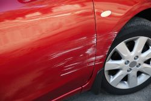
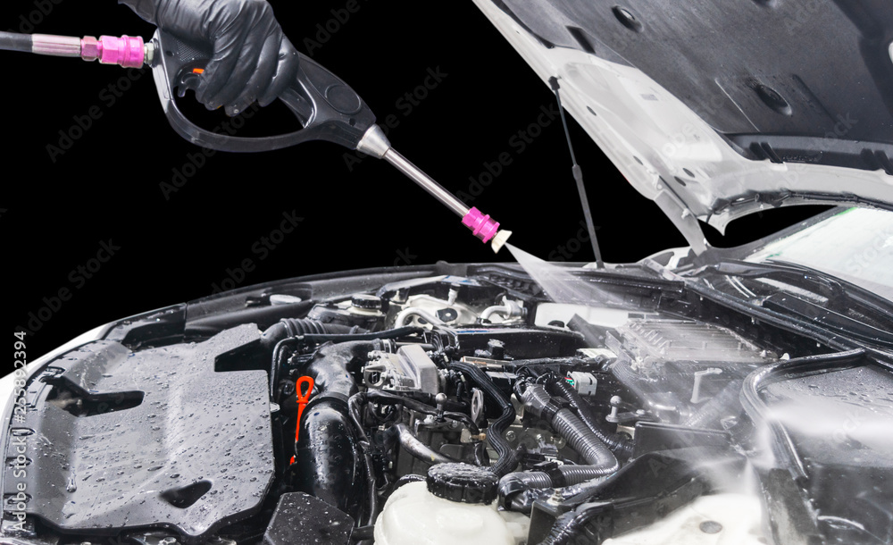

Common Misconceptions
- "Paint Correction will remove ALL of the scratches on my car."
Although when paint correcting, a detailers job is to remove as many scratches and swril marks as possible, this does not mean that they will be able to remove all of the scratches. Firstly, if the detailer is being paid for a paint enhancement, they will not spend hours on end chasing every scratch on the car. Rather they will do just that, enhance the paint to to remove oxidized clear coat and minor scratches and swirls. On the other hand, some scratches may be too deep to remove with any paint correction. If the scratch is past the clear coat into the base or even primer coat, then the scratch is likely unreparable and will need to be repainted to truly be fixed.
- "My other detailer does it for cheaper, they must be the better alternative."
The phrase "you pay for what you get" is exactly the way to describe the Detailing industry. Although a person may charge a significatly less price, they more than likely are doing singnificantly less when detailing your vehicle. It is extremely important to look at both pricing and what is included in the service.
- "You cannot pressure wash your engine bay or else it will damage the motor."
Although this statement used to be true, it only applies to those that have a carburated motor. Nowadays modern engines use direct port injection and are for the most part sealed off meaning that it is safe to use a pressure washer in an engine bay as long as you are careful to cover any electronic components to not get wet and also use as little pressue as possible from the pressure washer. Make sure to talk to your detailer if you have any questions about your specific vehicle.